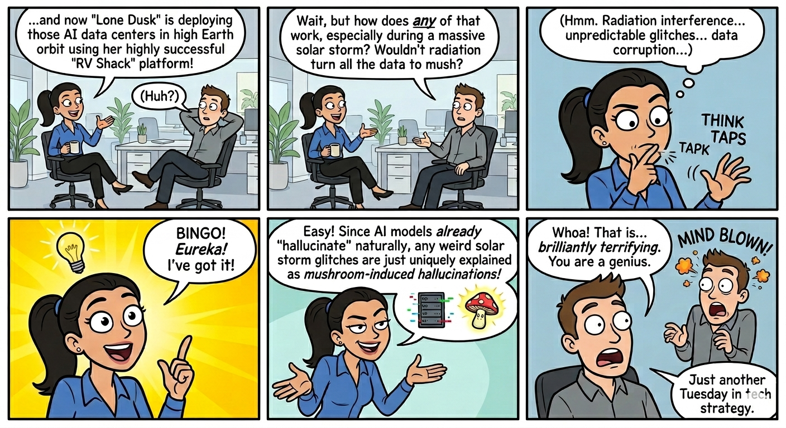
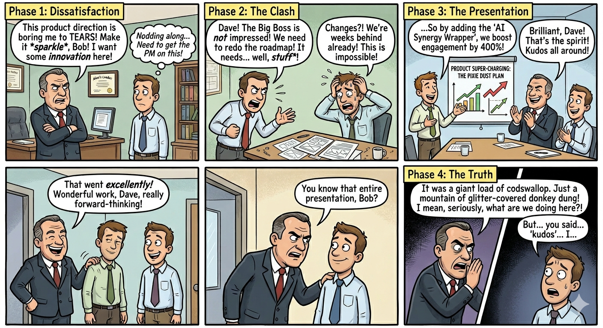
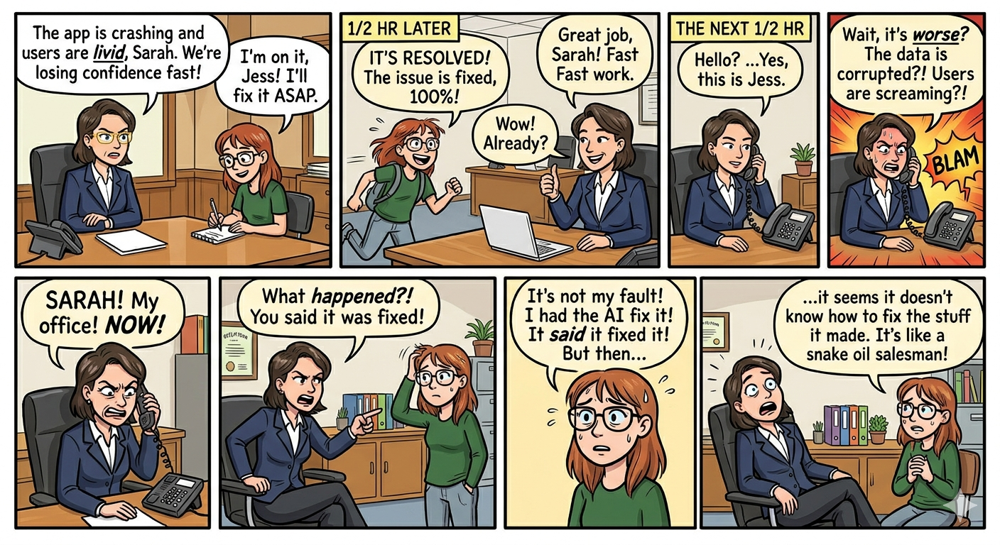

Stakeholder Engagement Expectations
Life of a Junior Executive 1
Fictitious Corporate World Satire
Welcome to the corporate world, a beautifully orchestrated satire where "circle back" means never, "synergy" means doing someone else's job, and "per my last email" is the polite equivalent of throwing a throwing knife. If you don't know what's going on, just look intensely focused, nod twice, and say, "Let's take this offline." Works 100% of the time. It is a unique ecosystem where adults gather in glass rooms to passionately debate the layout of a PowerPoint slide, while nodding solemnly at phrases that make absolutely no sense out loud. We track "deliverables" that vanish into thin air, attend one-hour meetings to plan the next two-hour meeting, and treat a slightly warmer-than-usual office coffee machine like a major employee benefit. Ultimately, modern office life is a performance where everyone forgets the script, but we all keep smiling, adjusting our webcams, and nodding on mute—because the only thing more terrifying than the chaos is accidentally unmuting yourself while sighing.
Satirical cartoons rendered as PNG art with playful text and typographic flair.
Life of a Junior Executive 1

Life of Junior Executive 2

Life of a Junior Executive 3

Life of an AI Executive 1

Life of an AI Executive 2
A strategic deliverable optimized to cross-functionally optimize the wellness metrics of severely over-caffeinated stakeholders.